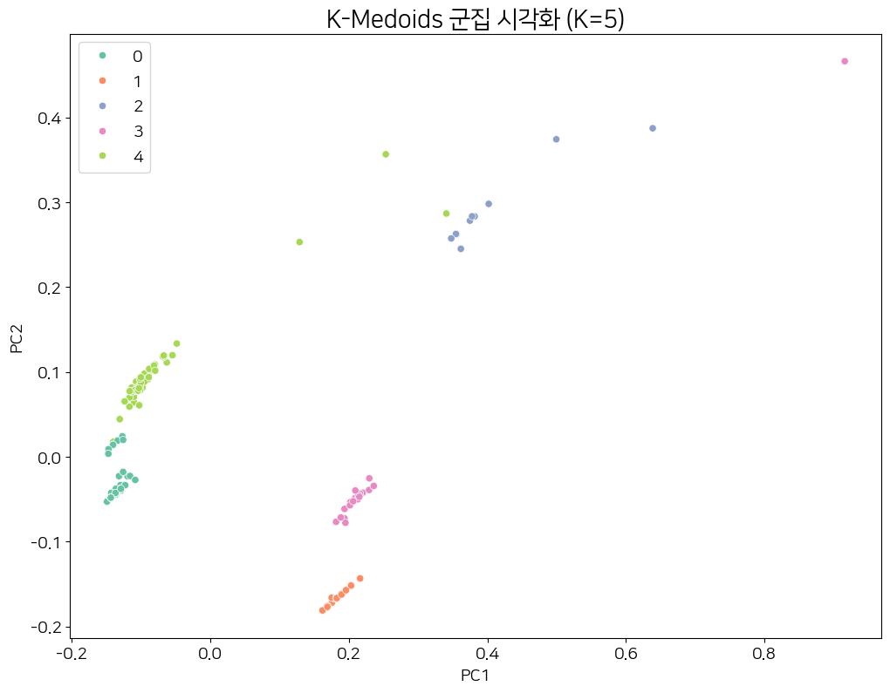
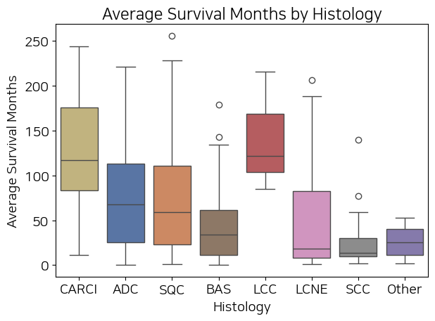

Data Analyst with an interest in biological datasets
About
Interested in data analysis and visualization, with projects involving biological datasets such as virus genomes and ClinVar variants.
코딩과의 인연은 어릴적부터 시작했던 네이버 마이홈, 나모 웹 에디터, HTML에서 시작되었습니다. 고등학생 때는 Visual Basic, 대학생 때는 MATLAB, 그리고 일하면서 JSP, Python, JavaScript까지 경험하게 되면서 지금의 데이터 분석까지 이어졌습니다.
이와 별개로 Bioinformatics에도 관심이 있어, 개인적으로 Biopython cookbook을 따라하며 다양한 분석을 시도했습니다. R도 공부했지만, 주로 Python을 활용하여 데이터를 탐색하고 분석하는 경험을 쌓았습니다.
TMI
도서실 지박령으로 살다가 고등학생때 담임 선생님의 추천으로 도전 골든벨에 출연해서 최후의 3인까지 갔었습니다. 당시 최후의 3인 중에서는 유일한 1학년이었습니다.
윈도우, 리눅스(Ubuntu), 맥을 전부 써봤습니다. 코딩할 때 편한건 맥 > 리눅스 > 윈도우 순입니다. 세팅도 혼자 할 수 있습니다.
주로 VScode(+Antigravity)를 씁니다. Pycharm은 쓰긴 쓰지만 리눅스에서는 일일이 설치경로까지 찾아가야 해서 번거롭고, Spyder는 리눅스에서 한글 입력이 안 돼서 불편해합니다.
대학교 전공은 컴퓨터쪽이 아니라 분자생물학이었지만, 그때부터 막연하게 '생물학과 코딩이 만난다면 어떨까?'라는 생각은 가지고 있었습니다.
Education
2010 ~ 2014 세종대학교 분자생물학과 졸업
Paper
Genetic identification of ACC-RESISTANT2 reveals involvement of LHT1 in the uptake of ACC in Arabidopsis thaliana
Certificate
2018.09 | 컴퓨터활용능력 2급
2025.12 | 데이터분석준전문가(ADsP)
2025.12 | SQL 개발자(SQLD)
Training
멋쟁이사자처럼 | 데이터분석 부트캠프 7기 수료(진행중)
NIPA | AI 전문 인력 양성 과정 이수
가톨릭대학교산업협력단 | 연구데이터 디지털 전환 및 표준화 교육
Skill
Python library
Data Processing
- Numpy
- Pandas
Visualization
- Matplotlib
- Seaborn
Statistics
- Scipy.stats
- statsmodels
Bioinformatics
- Biopython
- GEOparse
Tools
Visualization
- Tableau
Collaboration
- Notion
- Slack
Documentation
- MS-Office
Data & Database
- SQL
- Oracle
OS & Environment
- Ubuntu
- Mac OS
Biology
Viral Genomic Insight: Structural and Evolutionary Profiling of Hantavirus and H3N2
Project summary
MSA와 Shannon entropy를 기반으로 Hantavirus와 Influenza H3N2의 유전자 변이 패턴을 분석하고, 거리행렬 기반 k-medoids를 이용해 유사한 서열들을 군집화
Image

인플루엔자 H3N2 k-medoid 군집분석 결과
Process & Statics
1. NCBI Entrez 모듈을 이용해 바이러스의 게놈 데이터 입수
2. MUSCLE MSA를 진행
3. MSA 데이터를 바탕으로 Shanon entropy를 도출하여 변이 핫스팟 탐색, Mann-Whitney U test 진행
4. Phylogenic tree 생성 후 거리행렬 기반 k-medoid, Spearman correlation 분석
인플루엔자는 H3N2 아종 고정으로 Mann–Whitney U 검정 대신 Spearman 상관분석을 적용함
Associated link
Lung Cancer Expression Insight: Identifying Key Genetic Drivers through DEG Analysis
Project summary
폐암의 병리학적 특성에 따른 생존 곡선 및 평균 생존 기간을 비교 및 시각화
Images

폐암의 조직학적 유형에 따른 평균 생존기간 비교 (boxplot)
Process & Statics
1. GEOparse를 통해 GEO에서 폐암 데이터 입수 (Dataset No: GSE30219)
2. 필요한 정보만 추출한 다음 NSCLC, SCLC의 생존 곡선 및 평균 생존 기간 비교를 위해 Mann-Whitney U-test 및 Kruskal-Wallis test, Dunn's test를 진행
3. 암종별 생존 곡선 및 평균 생존 기간 비교
Associated link
ClinVar Insight Engine: Interactive Genomic Variation Analysis Dashboard
Project summary
clinVar의 유전자 변이 데이터를 분석하고, Tableau를 이용해 각 염색체별 현황을 볼 수 있는 인터렉티브 대시보드 생성
Images

Tableau Dashboard (각 염색체별로 필터가 걸려 있음)
Process
1. clinVar에서 vcf파일 입수
2026.2.8일에 생성, GRCh37로 진행
2. VCF파일의 데이터프레임화 및 csv파일 저장
3. pandas를 이용한 EDA 분석
4. Tableau를 이용한 대시보드 및 스토리보드 제작
Associated link
Team project
Marketing Efficiency Engine: Behavioral Segmentation and Strategy Optimization for Portugal Bank Telemarketing
Project summary
고객의 예금 상품 가입 전환률을 분석하고, 가입 전환률을 높일 방안을 고객 차원과 마케팅 차원에서 도출
Why? 이들이 은행측의 주요 타겟인 반면 가입 전환율이 제일 낮았음을 EDA를 통해 확인하였음.
Role
1. 전처리 파이프라인 설계 및 다변량 통계 분석(Multivariate Analysis) 주도
2. 고객 행동 데이터 기반의 세그먼트별 전환 가설 검정 수행
Process & Statics
Static analysis
1. Hypothesis Testing: Chi-square 및 Mann-Whitney U Test를 통해 타겟 그룹 간의 유의미한 행동 차이 규명.
2. ANOVA & Post-hoc (Tukey HSD): 그룹 간 평균 차이의 유의성을 검정하고, 사후 분석을 통해 가장 전환율이 낮은 20~40대 타겟층의 구체적인 이탈 원인을 수치로 증명.
3. FAMD (Factor Analysis for Mixed Data): 수치형과 범주형이 혼합된 데이터 특성을 고려하여 차원 축소를 진행, 고객의 복합적인 프로파일링을 2차원 평면상에 시각화하여 잠재적 기회 요인 포착.
Associated link
Humanoid Strategy Insight: Economic Viability and Productivity Analysis in Manufacturing
Project summary
사람의 노동력 데이터를 바탕으로 휴머노이드의 노동력을 추정하고, 제조업에서 휴머노이드를 도입했을 때의 이점에 대해 분석
Role
1. 공공 데이터(KOSIS) 기반의 산업 동향 분석 및 데이터 정문화(Normalization)
2. MTM 기법을 활용한 인간-로봇 작업 효율 비교 알고리즘 설계 및 함수화
Process
Preprocessing
1. KOSIS 통계 데이터의 복잡한 다중 헤더 구조를 분석 목적에 맞게 재설계.
2. 정규표현식을 활용하여 화폐 단위 및 비정형 텍스트를 정제하고 데이터의 일관성 확보.
3. melt 함수를 이용해 Wide-format을 분석 최적화된 Long-format으로 변환하여 시계열/비교 분석 토대 마련.
MTM
1. 특정 작업 동작을 MTM(Methods-Time Measurement) 기준으로 수치화하여 인간과 로봇의 생산성 차이를 정밀 비교.
2. 가변적인 무게(최대 25kg)와 작업 환경을 반영한 시뮬레이션 함수를 구축하여, 단순 정적 분석을 넘어선 동적 데이터 도출 성공.